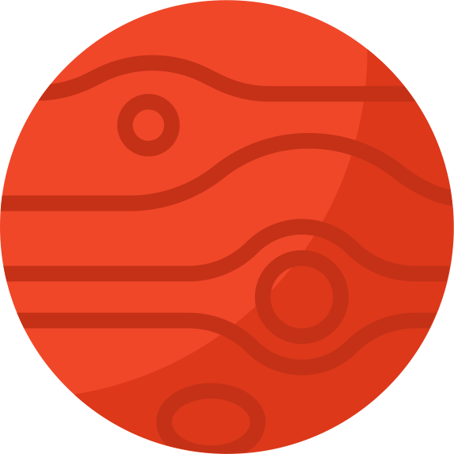

Солнечная Система Солнце Меркурий Венера Земля Марс Юпитер Сатурн Уран Нептун  Солнечная система – это совокупность планет, вращающихся вокруг центральной звезды. Ученым удалось установить, что ей примерно 4,57 млрд лет, а появилась она за счет гравитационного сжатия газопылевого облака. В основе системы лежит яркая звезда – Солнце, которое удерживает планеты и другие объекты. заставляя их вращаться по орбите на определенном расстоянии. Оно во много раз превосходит по диаметру другие объекты, находящиеся в области его притяжения. Солнце обладает такой большой массой, что все остальные планеты системы составляют лишь 0,0014% от его веса. В составе Солнечной системы, помимо звезды, находится восемь основных планет, а также пять карликовых. Располагается она в галактике Млечный Путь, в рукаве Ориона. Поскольку Солнечной системе миллиарды лет, люди могут лишь строить гипотезы о способах ее появления. Наиболее популярной является небулярная теория, выдвинутая учеными Лапласом, Кантом и Сведенборгом в XVIII веке. Она строится на том, что система образовалась за счет гравитационного коллапса одной из частей огромного облака, состоящего из газа и пыли. В будущем гипотеза дополнялась за счет данных, полученных при исследовании космоса. Сейчас процесс возникновения Солнечной системы описывается следующими шагами: Изначально в этой области вселенной находилось облако, состоящее из гелия, водорода и других веществ, полученных при взрывах старых звезд. В небольшой его части началось уплотнение, ставшее центром гравитационного коллапса. Он постепенно начал притягивать к себе окружающие вещества. Из-за притяжения веществ размеры облака начали уменьшаться, при этом росла скорость вращения. Постепенно его форма превратилась в диск. По мере сжатия увеличивалась плотность частиц на единицу объема, что приводило к постепенному нагреву вещества за счет частых столкновений молекул. Когда центр гравитационного коллапса разогрелся до нескольких тысяч кельвинов, он начал светиться, что означало образование протозвезды. Параллельно с этим, в разных областях диска начали появляться другие уплотнения, которые в будущем послужат гравитационными центрами для образования планет. Финальный этап формирования солнечной системы начался в период, когда температура центра протозвезды превысила несколько миллионов кельвинов. Тогда гелий и водород вступили в реакцию термоядерного синтеза, что привело к появлению полноценной звезды. Остальные уплотнения диска постепенно сформировались в планеты, которые начали вращаться в одном направлении вокруг Солнца, находясь на одной плоскости. Данный процесс длился очень долгое время, и ученые могут лишь догадываться, сколько лет ушло на формирование Солнечной системы.